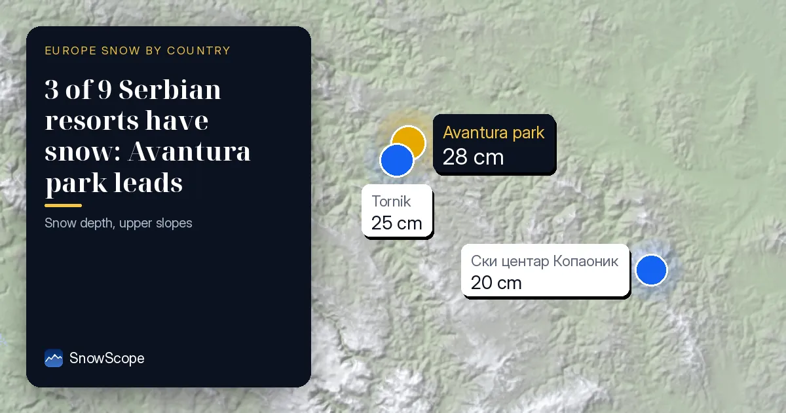

Serbia snow report today: snow depth and new snow, 16 November 2026
Snow covers roughly 70 km² in Serbia on 16 November, about the same as yesterday.
See the live snow forecast for Avantura park in the SnowScope appSnow depth, powder alerts and the 3D map, free.
Snow on the ground
Over the week the white area has hardly moved from 90 km². No height band is mostly white yet.
| Resort | Snow depth | New snow, 72 h | Coming, next days | Top |
|---|---|---|---|---|
| Avantura park | 28 cm | 2 cm | 0 cm | 1,485 m |
| Tornik | 25 cm | 2 cm | 0 cm | 1,486 m |
| Ски центар Копаоник | 20 cm | 2 cm | 0 cm | 1,975 m |

New snow in the last three days
Kopaonik, Zlatibor and Stara Planina got the most fresh snow over three days, up to 3 cm.
Best resorts right now
Avantura park leads with 28 cm on its upper slopes.
Then come Tornik (25 cm) and Ски центар Копаоник (20 cm).
Avantura park picked up 2 cm in the last three days and could add 0 cm by Thursday 19 November.
Tornik picked up 2 cm in the last three days and could add 0 cm by Thursday 19 November.
3 of the 9 resorts we follow in Serbia have snow on their upper slopes.
What it means on the slopes
A quiet spell: groomed runs stay reliable, the snow off the pistes gets older and firmer.
The next days
Over the next three days up to 0 cm is expected, and up to 8 cm over the week.
Monday 23 November stands out, with up to 6 cm in a day.
Further out, days 8 to 14 show up to 10 cm on the snowiest slopes.
Tips for skiers
- Early-season snow is thin over rocks: ski the groomed runs first.
- Snow above the tree line can be wind-packed: watch the ridges.
- Fresh snow on a cold base sticks badly: take care on steep slopes.
About these numbers
Resort snow depths are the deepest snow on the resort's upper slopes from the SnowScope snow model (about 1 km, run of 16 November); they are estimates for an area, not a measurement at one point. Station values are measurements on the date shown. Forecasts can change. Always read the official avalanche bulletin before going off-piste.
Cite this report
For research, teaching or the press: the numbers and charts are free to reuse under CC BY 4.0 with this citation.
SnowScope (2026), Serbia snow report today: snow depth and new snow, 16 November 2026, https://snowscope.app/blog/en/2026/11/serbia-snow-report-16-november-2026.html, accessed 2026-11-16
SnowScope (Atlas Labs). (2026, November 16). Serbia snow report today: snow depth and new snow, 16 November 2026. SnowScope snow reports. https://snowscope.app/blog/en/2026/11/serbia-snow-report-16-november-2026.html
BibTeX
@misc{snowscope2026serbiasnowreport16novemb,
author = {{SnowScope (Atlas Labs)}},
title = {Serbia snow report today: snow depth and new snow, 16 November 2026},
year = {2026},
month = nov,
howpublished = {\url{https://snowscope.app/blog/en/2026/11/serbia-snow-report-16-november-2026.html}},
note = {Published 2026-11-16 20:42 UTC; accessed 2026-11-16}
}· CC BY 4.0 · Methods, data and tools →
Avantura park: snow and temperature by height, this winter vs last (tools) →
Follow Avantura park
Free: a message when fresh snow is coming, and the forecast every morning.
More snow reports

Tampere on 13 November 2026: 0 cm at Tottijärvi and at the stations around the city, 2 cm at Hyytiälä to the north-east. In half of past winters Tampere was white by 10 November. A trace of wet snow on Saturday.

Stockholm snow depth on 13 November 2026: 0 cm at Observatoriekullen and at every station around the city. When the snow usually arrives, and why this weekend will not bring it.

Dog owners in Stockholm, 13 November 2026: 0 cm of snow measured in the city, the nearest 2 cm is 75 km north. Where dogs may run free in Stockholm, the rules in the nature reserves, and a dry weekend forecast.